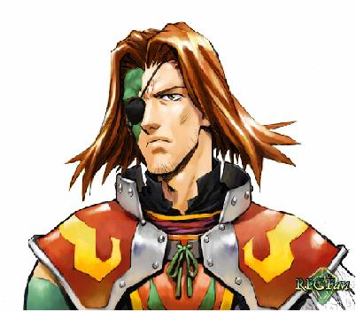

Forums galactiques > Assemblée Galactique : diplomatie officielle > Plainte
| nemusar Respect diplomatique : 303  11/09 ETU 00:22 | Score : 0 Détails mon cher mansfeld,
je n'est jamais dit que je m'impliquerai cependant ma derniere allocution etait pour clore la salle... | ||
| Beth le cerf blanc Respect diplomatique : 112  11/09 ETU 07:32 | Score : -2 Détails Le cerf revint quelque minutes et dit
"La démocratie ayant echouer.Ce commandant n'ai pas digne de parler correctement(dans tout les sens du terme...)ni même de s'expliquer convenablement...des menaces ayant été lançée c'est la guerre..." | ||
| Caleb Wollstonecraft Respect diplomatique : 463  11/09 ETU 10:18 | Score : 3 Détails « Cher commandant, bien que je conçois vos exaspérations, je conçois moins votre peu de foi en la démocratie, si elle est en rapport.
Parlons plutôt de conversation entre commanders responsables qui tourne à l’enfantillage détruisant ainsi toute chance diplomatique. La démocratie ne peut rien faire contre des esprits bouillonnants et enclins au bellicisme…à ce point. Ne pensons donc pas au milliard de mort prochaine qui payeront pour cette dispute de propriétaire mécontent. » | ||
| Ash Respect diplomatique : 0  11/09 ETU 17:27 | Score : 0 Détails 1) Dans ton dernier message, tu dis que on est a l'assemblee pour parler diplomatiquement et en personnes civilisees, commence toi d'abord.
2) Les temperament de Grimaldus ont toujours ete violents... Tu l'as cherche, tu l'as trouve. 3) Je ne connais pas les raisons de cette guerre a la base meme si j'ai suivi son conflit depuis le debut, mais menacer quelqu'un est deja une raison de guerre [HRP] 4) Menacer quelqu'un sur MSN que l'on rapportera tel truc RP alors que c'est un mensonge, ca peut te faire des ennemis. A mon avis, tu n'aurai pas du faire ca... [/HRP] 5) Tu devrais ameliorer ta facon d'ecrire, meme si c'est vrai que tu fais des efforts, essaie de faire des paragraphes aeres. Et aussi essaie d'ameliorer ton orthographe, nous ne sommes pas en train de faire des textes en mission d'infiltration ou la moindre seconde est comptee, je pense que tu as le temps de t'appliquer... Ah... Bonjour je suis Ash... Revenu ici pour en mettre plein les oreilles a tout le monde... Vous ne devez pas me connaitre. Bon... Bonne soiree... | ||
| Xaldin Respect diplomatique : -123  11/09 ETU 17:33 | Score : -3 Détails Beth le cerf blanc, vos interventions, minportes peut, ainsi que vos badineries de maigres importance, franchement, quand vous parlez je n'ecoute meme pas... la democratie est base sur de grands pilier, et agire comme vous le faites, ne fait que faire un pas en arriere, c 'est une offence aux piliers democrates de cette galaxie... vous y reflechirez pour le prochain debat commandant?
apres un debats, une declaration de guerre n'est autre qu'une preuve de barbarie... vous dites que je ne suis pa digne d'etre commandant, l'etes vous? | ||
| Ash Respect diplomatique : 0 11/09 ETU 17:39 | Score : 0 Détails Xaldin, cherchez qui a commence cette barbarie en premier... Qui a vole le mouton du berger voisin en premier?
A mon avis, vous avez cherche ennuis, vous les avez trouves... De plus, a ce que j'ai vu, ce cerf blanc est commandant respectable. Je n'ai encore entendu aucune plainte ni aucun conflit pesant sur lui... De plus, Beth, si je peux le tutoyer, ne fait pas la democratie reculer, mais il la fait avancer... Ash | ||
| Beth le cerf blanc Respect diplomatique : 112 11/09 ETU 17:43 | Score : 0 Détails **Message Holographique**
"Hahaha...Des piliers démocrates.Vous avez raison mais vous les bafouez chaque jours que dieu fait!Je suis digne d'être commandant.Plus que vous en tout cas...Ne polémiquons plus et defendez vous!" P.S:Arretez de poluer le X-com de Hyacinthe avec vos messages d'aide tel que celui ou vous demander de le rejoindre dans sa quete de prosperité. **Fin de la communication** | ||
| Ash Respect diplomatique : 0 11/09 ETU 17:48 | Score : 0 Détails Xaldin...
Expliquez nous ici exactement tout ce qui s'est passe. Ne criez pas, ne soyez pas presse... Expliquez nous clairement, et dans les moindres details... Peut-etre que si je trouve votre raison valable je vous passerai une de mes planetes et essaierait de convaincre Grimaldus de vous la laisser comme Terre d'exil... Beth, laissons cette discution de cote, s'il reponds a cela, ignorez le... Ash | ||
| Hyacinthe Respect diplomatique : 10  11/09 ETU 18:20 | Score : 0 Détails Je prirais M. beth ne plus proferer d'affirmation quand a mon nombre de vaisseaux, mes relations avec certains commandants ou toutes autres choses calomnieuse qui releve du domaine de la vie galactique privé.
Ainsi arreter si vous voulez garder une bonne entente avec moi et mon peuple, car nous supportons res mal vos interventions. Fin de communiqué. | ||
| andeman Respect diplomatique : 1393  11/09 ETU 18:36 | Score : 2 Détails il est quand meme absolument navrant de voir tant de dechirement pour sept planetes,a ce que j'ai su seigneur xaldin,vous avez recupere d'autres planetes non?
calmez vous,de toutes facon vous perdrez bien plus en perseverant dans ce sens revenez a la raison l'ami,accpetez votre defaite,seul votre fierte et votre honneur sont touches? pensez au million de gens,que vous epargnerez en cessant de suite cette plainte, de plus je trouve cela dommage,meme si j'en suis responsable,la tournure que prenne ces evenements,des elements exterieur,tel hyacinthe commence a se friter avec xalfin,serf blanc...,c'est regrettable,plus vous mettez de l'eau au moulin plus il tournera,nous devrions tous clore le debat, j'aurais a dire moi aussi,mais je ne le fais par respect,mais aussi parcque quelques choses de plus important se passe,une ELECTION,soyons responsables et citoyens arretons cette petite gueguerre. | ||
| Xaldin Respect diplomatique : -123 11/09 ETU 18:51 | Score : -5 Détails HRP ash, c'est toi waren jle sais
je ne perdrais pas mon temps a re expliquer, si vous chercher des explications reliser le debut de ce topic, bon si il faut ce rabaisser a la barbarie, ainsi soit-il? mais je n'abandonnerais jamais, je ne mourrais jamais, quoi que vous puissiez faire, j'ai aussi mon honneur de commandant, et vous verrez que jorai l'occasion de vous le prouvez mainte fois a partir de maintenant... si ce commandant etais aussi respectable que vous le dites, il ne narguerait pas d'autre commandant a l'assemblee, il aurais au contraire eseyer de calmer le jeux, et de resoudre tout cela par diplomatie, or ce n'est pas ce que j'ai put constater? suis-je plus faible que grimaldus? biensure!! mais meme en perdant je ne n'abandonnerai jamais, je ne suis pas de ceux qui laissent tomber aussi facilement... | ||
| Seigneur Grimaldus Respect diplomatique : 806  11/09 ETU 19:22 | Score : 0 Détails "Je ne réexpliquerais pas non plus.
Après, vous vous ferez tous une idée de qui a raison, qui a tort, qui est en droit de tuer. Le Culte entre en action." | ||
| Caleb Wollstonecraft Respect diplomatique : 463 11/09 ETU 22:03 | Score : 0 Détails "en droit de tuer ?!"
| ||
| Seigneur Grimaldus Respect diplomatique : 806 11/09 ETU 22:15 | Score : 0 Détails "Des millions de civils innocents, dans mon cas, à cause de manque de protection et de batiments appropriés sur les planètes de Xaldin, et deux jeunes commandants et leurs civilisations dans son cas.
Enfin, droit de tuer, je me suis particulièrement mal exprimé. Disons, lui, avait-il le droit de tuer deux jeunes commandants? Quand à moi, ai-je raison de le détruire? Sachant, que je ne demande pas de réactions, il y en a déja eu trop et je ne les écoute plus, mais je demande aux commandants intelligents de se forger un avis sur toute la situation." | ||
| andeman Respect diplomatique : 1393 12/09 ETU 09:50 | Score : 4 Détails mon avis seigneur grimaldus est que vous en restiez là,le systeme 471 est sous vos ordres desormais,sont ils dans une situation meilleure?
je n'en sais fichtre rien,mais votre principale motivation qui etait de venger les commandants morts en recuperant les planetes du syst.471 est bel est bien rempli,sans vouloir me montrer insultant a nouveau,je me demande si vous ne cherchez pas a profiter de la situation,pourquoi continuer a chercher la guerre? Xaldin s'est a lui tout seul tirer une balle dans le pied si ce n'est pire! il est definitivement decridibilise,et aussi quelque part meurtri car il n'a pas eu ce qu'il escomptait! montrez l'exemple seigneur grimaldus,vous aussi soyez citoyen! | ||
| Xaldin Respect diplomatique : -123 12/09 ETU 16:05 | Score : 2 Détails merci beaucoup commandant andeman...
le seigneur Xaldin partie sasoire dans son siege de flammes, poussa un soupire de feu, et penssa aux elections... et ce dit que ce n'etait pas une tres bonne periode pour declancher une nouvelle guerre... il tomba dans la voie de la raison... et enttera la hache de guerre pour sa par avec grimaldus juste devant son siege... | ||
| Ash Respect diplomatique : 0 12/09 ETU 16:47 | Score : 0 Détails HRP// Merci de ne pas voter//
Xaldin, nous sommes dans un jeu, tu sais qui je suis, bien. Mais rends moi un service, ne mentionne pas mon nom IRL... Tu peux m'insulter IRL si tu veux... Mais bon, nous ne sommes pas censes nous connaitre... Du moins dans ce jeu, alors oublier toute relation avec le reel. //HRP Xaldin, Honorable, vous vous etes enfin decide a vous calmer... Esperons que tout se passera bien. Encore desole pour le HRP | ||
| Grodjirah Respect diplomatique : 256  12/09 ETU 17:24 | Score : 1 Détails Hummm les cris dans les assemblées... les menaces de conflits... les remarques insultantes entre diplomates...la diplomatie forcée.... les demandes d'alliances d'interets.. moi aimer cette odeur pesante dans l'air....
Etre l'odeur du combat, du sang, de la chair et des os! Etre l'odeur de la guerre! | ||
| andeman Respect diplomatique : 1393 12/09 ETU 17:48 | Score : 0 Détails grodjirah toi poser arme immediatement toi etre dans une assemblee pacifique!
toi aller taper quelques pirates de l'espace pour calmer soif de sang! lol | ||
| Grodjirah Respect diplomatique : 256 12/09 ETU 18:15 | Score : 1 Détails Tout d'abord, un orc sans son arme se sentir nu, comme dit une de nos maximes: "ça etre mon arme, moi devoir controler elle, comme moi controler ma vie, car arme sans moi n'etre rien, et moi sans arme n'etre rien non plus" (réplique modifiée de Full Metal Jacket)
Ensuite, moi pas avoir dit, en aucune mannière, que moi me battre. Moi juste sentir que fracas des combats etre proches, pas forcement mes combats. |
Forums galactiques > Assemblée Galactique : diplomatie officielle > Plainte